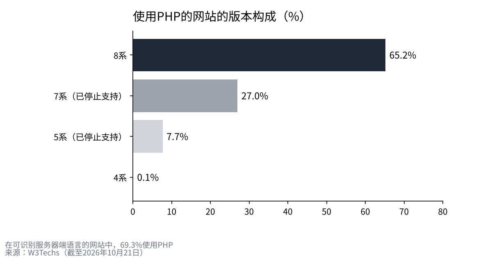
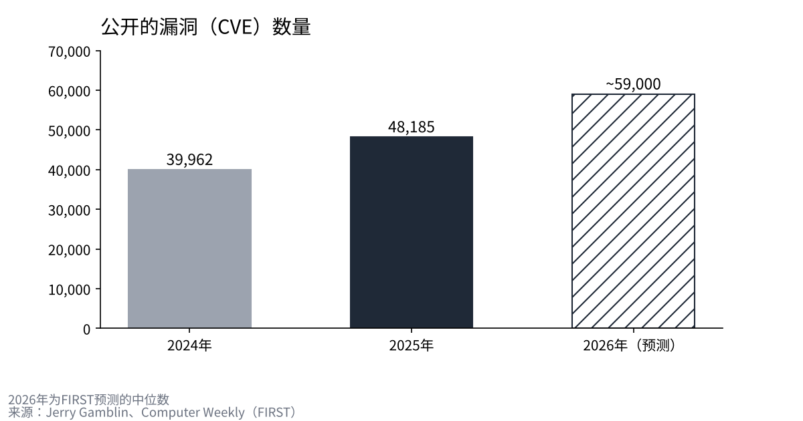

PHP2Shell的48小时：支撑七成网站的语言缺陷，是如何被发现、又如何被堵上的
2026年10月21日夜，驱动大量网站的编程语言PHP被公开存在两个缺陷，攻击者无需登录即可能接管服务器。
身在东京的我，用开发方和公共机构的一手资料，按时间顺序整理从预告、修正版发布到日本国内服务集体停摆的经过。
缺陷的原理、AI扮演的角色，以及今后可能发生的事，我也对照自己公司的防守来确认一遍。

从预告到修正版，发生了什么
起因是信息比预定的公开时间提前泄露。10月20日15时20分（协调世界时）左右，一个技术论坛上出现了预告这两个缺陷的帖子，随后被删除。PHP安全团队在同一天19时33分（日本时间21日4时33分）通过邮件列表预告了发布。
预告的内容是：按通用评分标准CVSS v4.0，有两个9.2分的缺陷；修正版将于21日14时（日本时间23时）发布。预告还写道，如果细节泄露或确认被利用，可能会提前发布。
在日本，21日中午起动作明显加快。日本信息处理推进机构（IPA）发布“事前准备的请求”，呼吁盘点PHP的使用情况；15时50分，一家网店开设服务进入紧急停止。当晚，高市早苗首相在X上发文，称这是“希望今晚就处理的紧急请求”，并表示无法修复时，暂时停止网站也是有效的对策。
修正版8.5.12、8.4.27、8.3.36、8.2.35于日本时间22时30分到23时左右发布。各家媒体报道的时间略有出入。到22日早上，停下的服务大多开始恢复。
| 时间（日本） | 事件 | 出处 |
|---|---|---|
| 10/21 04:33 | PHP安全团队预告发布 | php.announce/509 |
| 10/21 下午 | IPA呼吁事前准备和盘点 | IPA |
| 10/21 15:50 | 网店开设服务紧急停止 | 企业公告 |
| 10/21 约21:55 | 首相在X上呼吁应对和暂时停站 | Impress Watch |
| 10/21 22:30〜23:00 | 发布修正版8.5.12／8.4.27／8.3.36／8.2.35 | php.net、CERT-EU |
| 10/22 08:00 | 停下的服务开始恢复 | 企业公告 |
日本国内停下了什么
据安全博客piyolog统计，仅在公告中能确认的就有54个组织采取了行动。其中停止全部服务的20个，停止部分功能的7个，停掉自家或团体网站的27个。名单从网店开设服务、托儿所用的联络App、热门游戏，到厚生劳动省的护理服务信息公开系统、大学和铁路公司。
银行方面，静冈银行预防性地停止了网上银行，据报道截至21日23时尚未确认损失。停下服务的企业大多表示，未确认遭到攻击或信息泄露。它们不是因为出了损失才停，而是在打上修正版并确认之前，先把门关上。

缺陷的内容：内存不足，以及残留的状态
第一个缺陷CVE-2026-109618，出在内存耗尽时的处理上。PHP超过内存上限后会中断请求，但内部数据会停留在初始化到一半的状态。随后的清理处理，会把这些损坏的数据当作正常数据来使用。利用上传文件表单的解析，攻击者可以从外部故意制造内存不足。
第二个缺陷CVE-2026-109619，是上一个请求的状态在内存释放后仍然残留的问题。同一个工作进程处理下一个请求时，会使用没有被清理的状态。默认开启的上传进度功能，就是其中一条路径。
两个缺陷都能让攻击者无需登录，通过网络在服务器上运行代码。最危险的是Apache的mod_php，已经证实在应用代码运行之前，一次请求就能完成攻击。开发方表示，没有完整的缓解办法，更新是唯一安全的选择。
为什么影响会达到“七成网站”
据W3Techs统计，在可识别服务器端语言的网站中，69.3%使用PHP。仅WordPress就占全部网站的39.6%，Drupal和Joomla也建立在同一种语言之上。研究人员在这三者上都证实了登录前的接管。
不过，“七成”是使用率，并不是存在漏洞的网站的实际数量。真正的问题在于旧版本之多。在PHP网站中，已停止支持的7系占27.0%，5系占7.7%。这次官方的修正版只覆盖8.2及以后的版本，8.1及以前只提供了最低限度的源码补丁。8.2的支持也将在2026年12月31日结束。

AI做了什么
据OpenAI公布，研究公司Calif使用GPT-5.6 Sol发现了第一个缺陷。工作始于7月30日，8月1日发现，8月11日向开发方报告。Wiz也在8月19日独立发现，并写道使用了Gemini 4 Argon等工具。
重要的是，这并不是AI单独发现的。按照Calif的记录，提出假设的是人，线索是另一位研究人员在2004年发现的缺陷。AI承担的是通读内存管理代码、找出具体缺陷的工作。最初的内存不足缺陷在2020年就已为人所知，但当时没有人证明它能一直通向接管。
从发现到公开，大约经过了两个半月。在此期间，开发方、发现者和云服务商一直在协调修正。发现的能力越强，这种协调的速度就越是防守的关键。
是否确认被利用
答案因出处而异。IPA在21日表示尚未确认攻击，Huntress也表示在自家环境中没有看到。另一方面，watchTowr更新页面称，在自家的诱饵服务器上观测到了利用。截至查询时，美国的已知被利用漏洞清单（KEV）中没有收录。
可以确定的是，在修正版发布之前，声称可以利用这些缺陷的代码就已经开始流传。以“修正版一发布攻击就会开始”为前提行动的企业，事后看来判断是合理的。
今后可能发生的事
第一，同类发现会接连出现。公开的漏洞数量从2024年的39,962个增加到2025年的48,185个，2026年预计约5万9千个。AI越是重读旧代码，沉睡多年的缺陷就越会浮出水面。
第二，打补丁的宽限期会缩短。据报道，美国已发布指令，要求联邦机构在3天内修复最危险的漏洞。需要以“从公开到被利用可能只有几个小时”为前提，重新安排运维。
第三，继续使用旧版本的成本会上升。已停止支持的版本，即使发现下一个缺陷，也收不到官方修正。更新拖得越久，越会被迫在停站和重建之间做选择。越是小公司，越值得向委托方确认自家网站和预约系统运行在哪个版本上。

我是这样看的
我经营一家共享办公室，会员信息用外部服务管理。之所以不在自家持有，是因为我认为持有的信息越多，风险越高。即便如此，22日早上我还是联系了负责运维的公司，问了一句“我们这边没问题吧”。
这次的事让我觉得，IT也需要和建筑一样的修缮思路。外墙和设备，是在坏之前就积攒资金来更换。软件也一样，应该在支持结束之前，先准备好更换的费用。
AI给防守方和攻击方的是同样的速度。在缺陷被发现得越来越快的时代，我认为差距将来自修复的速度和决定停站的速度。选择合作的公司、选择投资对象时，我都想看这个速度。
来源
- PHP官方“Critical remote code execution vulnerabilities, update now” https://www.php.net/archive/2026.php
- PHP安全发布预告（php.announce/509） http://news-web.php.net/php.announce/509
- PHP支持中的版本 https://www.php.net/supported-versions.php
- GitHub GHSA-w8hw-w9fx-j79w（CVE-2026-109618） https://github.com/php/php-src/security/advisories/GHSA-w8hw-w9fx-j79w
- GitHub GHSA-6wmf-4rv5-p3rp（CVE-2026-109619） https://github.com/php/php-src/security/advisories/GHSA-6wmf-4rv5-p3rp
- IPA关于PHP安全发布的公告 https://www.ipa.go.jp/security/security-alert/2026/pre-alert20261021.html
- CERT-EU Security Advisory 2026-018 https://cert.europa.eu/publications/security-advisories/2026-018/
- OpenAI“Coordinated disclosure of critical vulnerabilities” https://openai.com/index/coordinated-disclosure-of-critical-vulnerabilities/
- Calif“PHP2Shell” https://calif.io/php2shell/
- Wiz“PHP2Shell” https://www.wiz.io/blog/php2shell-php-rce
- watchTowr“CVE-2026-109618 FAQ” https://watchtowr.com/intelligence/php-cve-2026-109618-faq/
- Huntress https://www.huntress.com/blog/php2shell-leaked-critical-php-vulnerabilities
- W3Techs（PHP使用率） https://w3techs.com/technologies/details/pl-php
- W3Techs（CMS份额） https://w3techs.com/technologies/overview/content_management
- Jerry Gamblin“2025 CVE Data Review” https://jerrygamblin.com/2026/01/01/2025-cve-data-review/
- Computer Weekly（FIRST的2026年预测） https://www.computerweekly.com/news/366638949/CVE-volumes-may-plausibly-reach-100000-this-year
- Cloud Security Alliance（BOD 26-04摘要） https://labs.cloudsecurityalliance.org/research/csa-research-note-bod-2604-ai-accelerated-patch-mandate-ente/
- piyolog（日本国内停站统计） https://piyolog.hatenadiary.jp/entry/2026/10/21/174516
- Impress Watch https://www.watch.impress.co.jp/docs/news/2150159.html
照片：Taylor Vick／Ilya Pavlov（Unsplash）。图表由YUKI CAPITAL制作
每天的数字与判断，记录在X上。